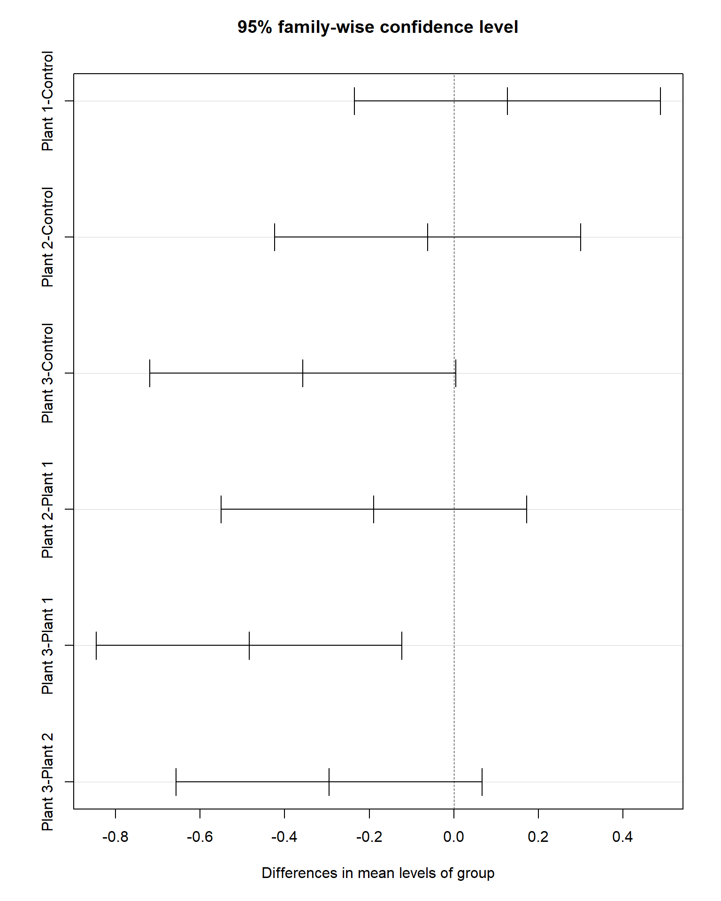
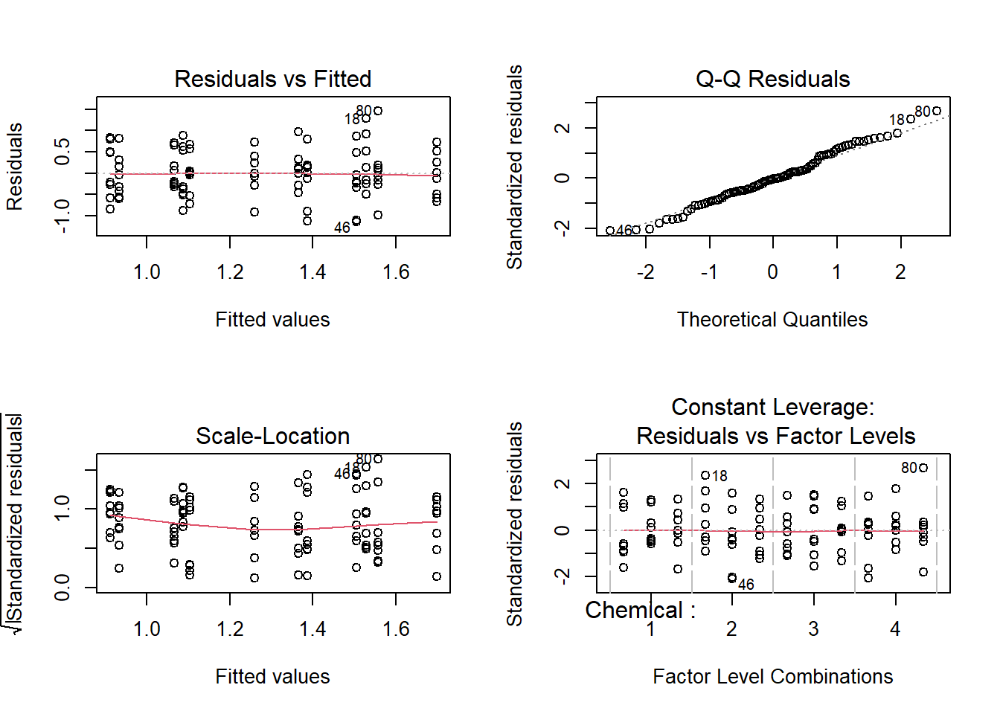

Section 11 Post-hoc test and Two-way ANOVA
Prerequisites
Load the libraries with R:
## Warning: package 'tidyr' was built under R version 4.0.5## Warning: package 'dplyr' was built under R version 4.0.5##
## Attaching package: 'dplyr'## The following objects are masked from 'package:stats':
##
## filter, lag## The following objects are masked from 'package:base':
##
## intersect, setdiff, setequal, unionPost-hoc test after one-way ANOVA
We saw from the last section that one-way ANOVA is used to test whether means among populations are the same. Once a one-way ANOVA is done, and significant differences are identified, one would be more interested in finding out which specific groups’s means (compared with each other) are different. The test compares all possible pairs of means. And this is so-called the post-hoc test of one-way ANOVA.
There are a great number of different post hoc tests that you can use. Here we introduce the Tukey’s Test (or Tukey procedure), also called Tukey’s Honest Significant Difference (Tukey’s HSD) test, which is the most common and widely accepted method. See [RS] ch. 6 (p.149-170) and post hoc ANOVA tests for other tests and when to use those.
Let’s use the Cd example from the last section for the one-way ANOVA and its Tukey’s test.
# Sub-samples
Control <- c(0.64, 0.91, 0.84, 0.41, 1.58, 0.48, 0.88, 0.74, 1.09, 1.28)
P1 <- c(1.20, 1.17, 0.76, 0.92, 0.65, 1.14, 1.05, 1.28, 0.89, 1.06)
P2 <- c(0.25, 1.31, 0.43, 1.18, 1.02, 0.83, 1.02, 0.66, 0.70, 0.83)
P3 <- c(0.63, 0.30, 0.49, 0.01, 0.63, 0.69, 0.68, 0.34, 1.09, 0.42)
# Make data frame
Cd_data <- data.frame(Cd=c(Control, P1, P2, P3),
group=c(rep("Control", length(Control)),
rep("Plant 1", length(P1)),
rep("Plant 2", length(P2)),
rep("Plant 3", length(P3)) ))
# Compare boxplots
ggplot(Cd_data, aes(x=group, y=Cd, fill=group)) +
geom_boxplot() +
labs(title="Soil Cd concentrations under different conditions",
x="Group", y="Cd concentration [mg/kg]") +
theme_classic()
## Df Sum Sq Mean Sq F value Pr(>F)
## group 3 1.261 0.4204 4.662 0.00748 **
## Residuals 36 3.246 0.0902
## ---
## Signif. codes: 0 '***' 0.001 '**' 0.01 '*' 0.05 '.' 0.1 ' ' 1## Tukey multiple comparisons of means
## 95% family-wise confidence level
##
## Fit: aov(formula = Cd ~ group, data = Cd_data)
##
## $group
## diff lwr upr p adj
## Plant 1-Control 0.127 -0.2346788 0.488678783 0.7805407
## Plant 2-Control -0.062 -0.4236788 0.299678783 0.9668827
## Plant 3-Control -0.357 -0.7186788 0.004678783 0.0541363
## Plant 2-Plant 1 -0.189 -0.5506788 0.172678783 0.5030839
## Plant 3-Plant 1 -0.484 -0.8456788 -0.122321217 0.0049798
## Plant 3-Plant 2 -0.295 -0.6566788 0.066678783 0.1435130
Tukey’s test shows a significant difference in mean Cd concentration in the field with Plant #1 and field with Plant #3, and no significant difference between other pairs.
Section Example: Removal of cadmium from the soil by multiple approaches
Now suppose we would like to test whether other approaches could have an impact on soil Cd concentration. Instead of using plants (#1, #2, and #3) alone, we also try physical (with chemical #1 and #2) and chemical (#1, #2, #3, and #4) treatment method. We measure Cd concentration from each combination.
The results are list in the Cd dataset, which contains 96 rows and 4 variables:
- Physical: type of chemical used: factor level: 1 and 2
- Chemical: type of physical method used: factor level: 1, 2, 3, and 4
- Plant: type of Plant used: factor level: 1, 2, and 3
- Cd: soil Cd concentration
In R import the data:
# Read csv
cd_data <- read.csv("cd_data.csv", header=T)
# Change to factor type using tibble
cd_data_tbl <- as_tibble(cd_data) %>%
mutate(Chemical = factor(Chemical, ordered = TRUE)) %>%
mutate(Physical = factor(Physical, ordered = TRUE)) %>%
mutate(Plant = factor(Plant , ordered = TRUE))
# Quick check
glimpse(cd_data_tbl)## Rows: 96
## Columns: 4
## $ Physical <ord> 1, 2, 1, 2, 1, 2, 1, 2, 1, 2, 1, 2, 1, 2, 1, 2, 1, 2, 1, 2, 1, 2, 1, 2, 1, 2, 1, 2, 1, 2, 1, 2, 1, 2, 1, 2, 1, 2, 1, 2, 1, 2, 1, 2, 1, 2, 1, 2, 1, 2, 1, 2, 1, 2, 1, 2, 1, 2, 1, 2, 1, 2, 1, 2, 1, 2, 1, 2, 1, 2, 1, 2, 1,~
## $ Chemical <ord> 1, 2, 3, 4, 1, 2, 3, 4, 1, 2, 3, 4, 1, 2, 3, 4, 1, 2, 3, 4, 1, 2, 3, 4, 1, 2, 3, 4, 1, 2, 3, 4, 1, 2, 3, 4, 1, 2, 3, 4, 1, 2, 3, 4, 1, 2, 3, 4, 1, 2, 3, 4, 1, 2, 3, 4, 1, 2, 3, 4, 1, 2, 3, 4, 1, 2, 3, 4, 1, 2, 3, 4, 1,~
## $ Plant <ord> 1, 1, 1, 1, 1, 1, 1, 1, 1, 1, 1, 1, 1, 1, 1, 1, 1, 1, 1, 1, 1, 1, 1, 1, 1, 1, 1, 1, 1, 1, 1, 1, 2, 2, 2, 2, 2, 2, 2, 2, 2, 2, 2, 2, 2, 2, 2, 2, 2, 2, 2, 2, 2, 2, 2, 2, 2, 2, 2, 2, 2, 2, 2, 2, 3, 3, 3, 3, 3, 3, 3, 3, 3,~
## $ Cd <dbl> 1.71, 2.04, 0.90, 2.19, 1.62, 1.27, 1.24, 1.55, 0.76, 2.45, 1.09, 1.52, 1.97, 1.37, 0.61, 0.49, 0.58, 2.81, 1.74, 1.40, 0.71, 1.04, 0.50, 1.26, 0.60, 1.66, 0.37, 1.58, 0.20, 1.67, 0.34, 0.26, 0.83, 0.39, 1.74, 1.69, 1.~# Boxplot - Physical
ggplot(cd_data_tbl, aes(x = Physical, y = Cd, fill = Physical)) +
geom_boxplot() +
theme_classic()# Boxplot - Chemical
ggplot(cd_data_tbl, aes(x = Chemical, y = Cd, fill = Chemical)) +
geom_boxplot() +
theme_classic()# Boxplot - Plant
ggplot(cd_data_tbl, aes(x = Plant, y = Cd, fill = Plant)) +
geom_boxplot() +
theme_classic()
Here we convert cd_data to cd_data_tbl, which has a new format tibble. See Supplement 01 Data wrangling and quick plots for more.
Two-way ANOVA with R
A two-way ANOVA is used to estimate how the mean of a quantitative variable changes according to the levels of two factors. Use a two-way ANOVA when you want to know how two independent variables, in combination, affect a dependent variable.
In the proceeding example, we can use a two-way ANOVA to find out if the chemical type and plant type have an effect on average Cd concentration.
A two-way ANOVA with interaction tests three null hypotheses (H0) at the same time:
There is no difference in group means at any level of the first independent variable.
There is no difference in group means at any level of the second independent variable.
The effect of one independent variable does not depend on the effect of the other independent variable (a.k.a. no interaction effect).
A two-way ANOVA without interaction (a.k.a. an additive two-way ANOVA) only tests the first two of these hypotheses.
Here for our example, we use the two-way ANOVA will test whether the independent variables (chemical type and plant type) have an effect on the dependent variable (average Cd concentration). We also want to check if there is an interaction effect between two independent variables – for example, it’s possible that plant treatment affects the soil’ ability to take up chemical compounds.
In this setup, H0 are:
There is no difference in mean Cd concentration at any level of the chemical type.
There is no difference in mean Cd concentration at any level of the plant type.
The effect of chemical type does not depend on the effect of plant type (a.k.a. no interaction effect between chemical and plant treatment).
And the corresponding H1 are:
There is a difference in mean Cd concentration by chemical type
There is a difference in mean Cd concentration by plant type
There is an interaction effect between chemical type and plant type on average Cd concentration
To test the hypotheses in R:
# Test the interaction term
two_way_interaction <- aov(Cd ~ Chemical * Plant, data = cd_data_tbl)
summary(two_way_interaction)## Df Sum Sq Mean Sq F value Pr(>F)
## Chemical 3 5.323 1.7745 5.467 0.00176 **
## Plant 2 0.714 0.3569 1.100 0.33776
## Chemical:Plant 6 1.259 0.2098 0.647 0.69270
## Residuals 84 27.264 0.3246
## ---
## Signif. codes: 0 '***' 0.001 '**' 0.01 '*' 0.05 '.' 0.1 ' ' 1# Additive two-way ANOVA
two_way_additive <- aov(Cd ~ Chemical + Plant, data = cd_data_tbl)
summary(two_way_additive)## Df Sum Sq Mean Sq F value Pr(>F)
## Chemical 3 5.323 1.7745 5.599 0.00145 **
## Plant 2 0.714 0.3569 1.126 0.32882
## Residuals 90 28.523 0.3169
## ---
## Signif. codes: 0 '***' 0.001 '**' 0.01 '*' 0.05 '.' 0.1 ' ' 1To test whether two variables have an interaction effect in ANOVA, simply use an asterisk (*) instead of a plus-sign (+) in the model.
In the output table, the Chemical:Plant variable has a low sum-of-squares value and a high p-value, which means there is not much variation that can be explained by the interaction between chemical and plant type.
Similar to the one-way ANOVA, we can use the Tukey’s test lets us see which groups are different from one another.
## Tukey multiple comparisons of means
## 95% family-wise confidence level
##
## Fit: aov(formula = Cd ~ Chemical + Plant, data = cd_data_tbl)
##
## $Chemical
## diff lwr upr p adj
## 2-1 0.4404167 0.01501008 0.8658233 0.0395318
## 3-1 -0.1545833 -0.57998992 0.2708233 0.7772589
## 4-1 0.2991667 -0.12623992 0.7245733 0.2612190
## 3-2 -0.5950000 -1.02040659 -0.1695934 0.0023526
## 4-2 -0.1412500 -0.56665659 0.2841566 0.8207323
## 4-3 0.4537500 0.02834341 0.8791566 0.0318855
##
## $Plant
## diff lwr upr p adj
## 2-1 -0.022500 -0.3578973 0.3128973 0.9860108
## 3-1 0.170625 -0.1647723 0.5060223 0.4490216
## 3-2 0.193125 -0.1422723 0.5285223 0.3597295

This output shows the pairwise differences between the 4 types of chemical ($Chemical) and between the 3 types of plants ($Plant), with the average difference (diff), the lower and upper bounds of the 95% confidence interval (lwr and uwr) and the p-value of the difference (p-adj).
From the post-hoc test results, we see that there are significant differences (p < 0.05) between:
Chemical type 4 and 3,
Chemical type 3 and 2,
but no difference among plant types.
ANOVA procedure
As a parametric method, ANOVA has its assumptions as well:
Independence of observations
Normally-distributed dependent variable
Homogeneity of variance (a.k.a. homoscedasticity)
The first two assumptions are the same as the t-test. The last one refers that the variation around the mean for each group being compared should be similar among all groups. This is usually checked after running the model by examining the residuals. If the data fail to meet this assumption, we may be able to use a non-parametric alternative.
In the following, we will use the proceeding example to go through each step of ANOVA.
1 Check data
Visual checking
Statistical test: independence, normality, and outliers
# Quick plots
# Boxplot - Chemical
ggplot(cd_data_tbl, aes(x = Chemical, y = Cd, fill = Chemical)) +
geom_boxplot() +
theme_classic()
# Boxplot - Plant
ggplot(cd_data_tbl, aes(x = Plant, y = Cd, fill = Plant)) +
geom_boxplot() +
theme_classic()##
## Runs Test
##
## data: cd_data_tbl$Cd
## statistic = 1.037, runs = 53, n1 = 47, n2 = 47, n = 94, p-value = 0.2997
## alternative hypothesis: nonrandomness##
## Lilliefors (Kolmogorov-Smirnov) normality test
##
## data: cd_data_tbl$Cd
## D = 0.069905, p-value = 0.2959# Check outliers
# After examining the data, we decide to keep this value
grubbs.test(cd_data_tbl$Cd)##
## Grubbs test for one outlier
##
## data: cd_data_tbl$Cd
## G = 2.87863, U = 0.91186, p-value = 0.1589
## alternative hypothesis: highest value 3.02 is an outlier2 Write down H0 and H1
H0 are:
There is no difference in mean Cd concentration at any level of the chemical type.
There is no difference in mean Cd concentration at any level of the plant type.
The effect of chemical type does not depend on the effect of plant type.
H1 are:
There is a difference in mean Cd concentration by chemical type
There is a difference in mean Cd concentration by plant type
There is an interaction effect between chemical type and plant type on average Cd concentration
3 ANOVA with R
Build the ANOVA model with and without the interaction term:
# Test the interaction term
two_way_interaction <- aov(Cd ~ Chemical * Plant, data = cd_data_tbl)
summary(two_way_interaction)## Df Sum Sq Mean Sq F value Pr(>F)
## Chemical 3 5.323 1.7745 5.467 0.00176 **
## Plant 2 0.714 0.3569 1.100 0.33776
## Chemical:Plant 6 1.259 0.2098 0.647 0.69270
## Residuals 84 27.264 0.3246
## ---
## Signif. codes: 0 '***' 0.001 '**' 0.01 '*' 0.05 '.' 0.1 ' ' 1# Additive two-way ANOVA
two_way_additive <- aov(Cd ~ Chemical + Plant, data = cd_data_tbl)
summary(two_way_additive)## Df Sum Sq Mean Sq F value Pr(>F)
## Chemical 3 5.323 1.7745 5.599 0.00145 **
## Plant 2 0.714 0.3569 1.126 0.32882
## Residuals 90 28.523 0.3169
## ---
## Signif. codes: 0 '***' 0.001 '**' 0.01 '*' 0.05 '.' 0.1 ' ' 14 Check homoscedasticity of residuals
To check whether the model fits the assumption of homoscedasticity, look at the model diagnostic plots in R using the plot() function:

The diagnostic plots show the unexplained variance (residuals) across the range of the observed data.
Each plot gives a specific piece of information about the model fit. Here are things to check:
The red line representing the mean of the residuals should be horizontal and centered on zero (or on one, in the scale-location plot), meaning that there are no large outliers that would cause bias in the model. This means the variance of residuals don’t change too much.
The normal Q-Q plot plots a regression between the theoretical residuals of a perfectly-heteroscedastic model and the actual residuals of your model, so the closer to a slope of 1 this is the better.
If the model fails to fit the assumption of homoscedasticity, we need to use a non-parametric test instead.
5 Tukey’s test with R
Check pairwise difference:
## Tukey multiple comparisons of means
## 95% family-wise confidence level
##
## Fit: aov(formula = Cd ~ Chemical + Plant, data = cd_data_tbl)
##
## $Chemical
## diff lwr upr p adj
## 2-1 0.4404167 0.01501008 0.8658233 0.0395318
## 3-1 -0.1545833 -0.57998992 0.2708233 0.7772589
## 4-1 0.2991667 -0.12623992 0.7245733 0.2612190
## 3-2 -0.5950000 -1.02040659 -0.1695934 0.0023526
## 4-2 -0.1412500 -0.56665659 0.2841566 0.8207323
## 4-3 0.4537500 0.02834341 0.8791566 0.0318855
##
## $Plant
## diff lwr upr p adj
## 2-1 -0.022500 -0.3578973 0.3128973 0.9860108
## 3-1 0.170625 -0.1647723 0.5060223 0.4490216
## 3-2 0.193125 -0.1422723 0.5285223 0.35972956 Report the results
A brief description of the variables you tested
The F-value, degrees of freedom, and p-values for each independent variable
What the results mean.
In our example, we can report the results as:
We found a statistically significant difference in average Cd concentration by chemical type (F(3)=5.5, p < 0.001). Plant type leads to no statistically significant difference in average Cd concentration.
A Tukey post-hoc test revealed that chemical type 3 resulted in a lower Cd concentration on average than chemical type 2 (0.60 mg/kg), chemical type 3 resulted in a lower Cd concentration on average than chemical type 4 (0.45 mg/kg), chemical type 1 resulted in a lower Cd concentration on average than chemical type 2 (0.44 mg/kg).
In-class exercises
Exercise #1
Use cd_data_tbl to find out if the physical type and plant type affect average Cd concentration. Follow the ANOVA procedure step 1-6.